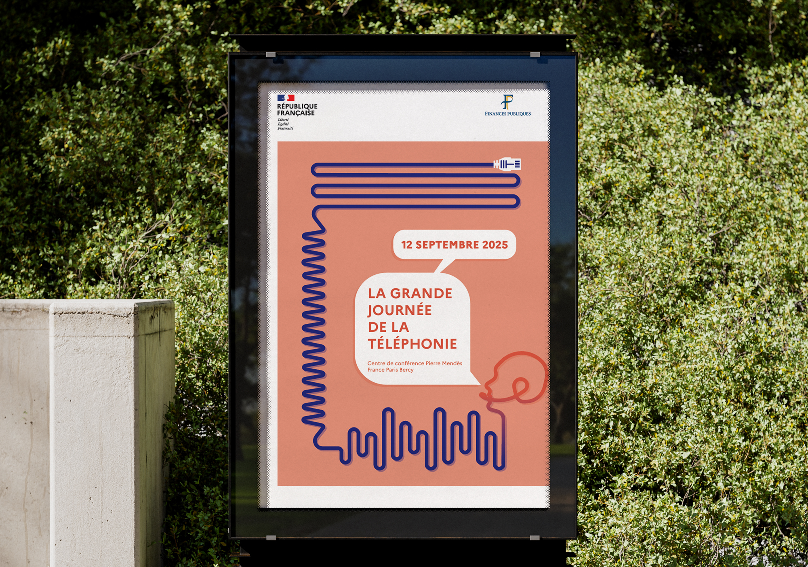
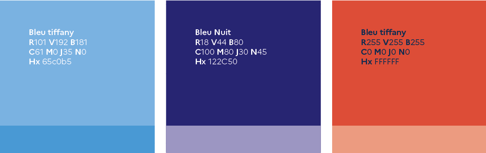
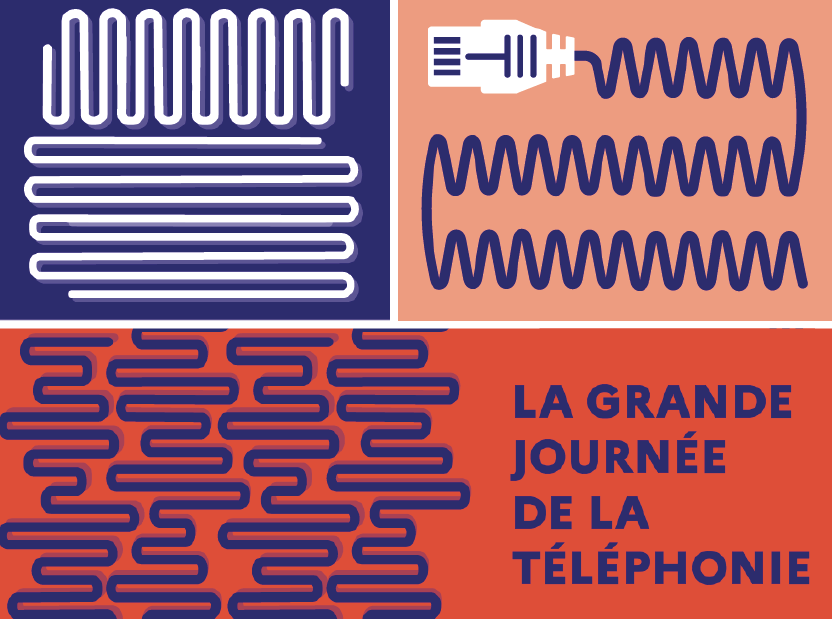
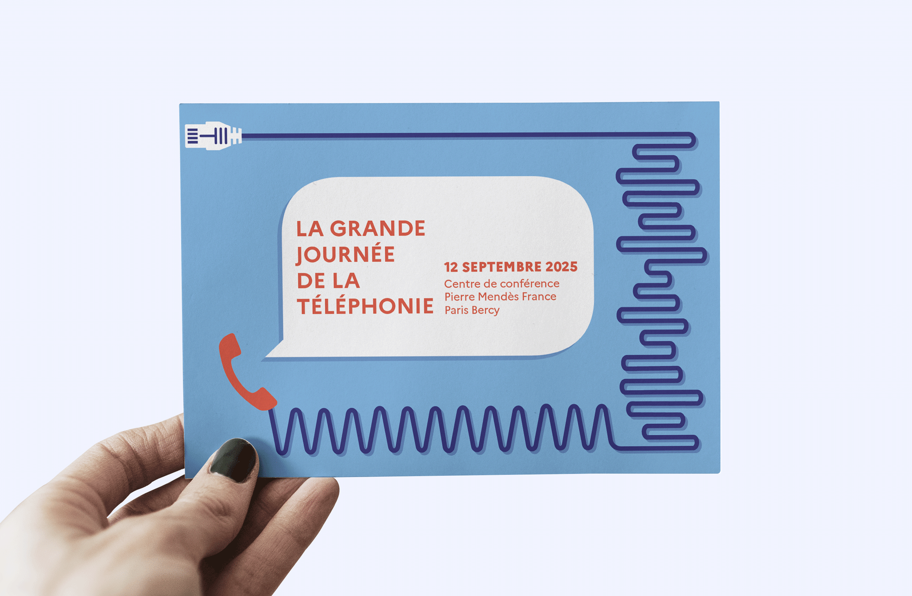

Créer l’identité visuelle de la grande Journée de la téléphonie organisée par le SRP, en illustrant le parcours des différentes étapes du service, de son installation technique jusqu’à l’échange avec l’usager. L’identité doit traduire à la fois la dimension technique et la relation usager.
Un système graphique représente le parcours de la téléphonie par un câble Ethernet évoluant visuellement vers un câble téléphonique, puis vers des ondes sonores menant à un agent annonçant l’événement.
Les câbles incarnent la dimension technique du service, tandis que le phylactère et la figure de l’agent évoquent la communication et la relation humaine.
La palette mêle bleus technologiques et teintes rosées pour équilibrer rigueur et chaleur, symbolisant la rencontre entre technique et humain.



